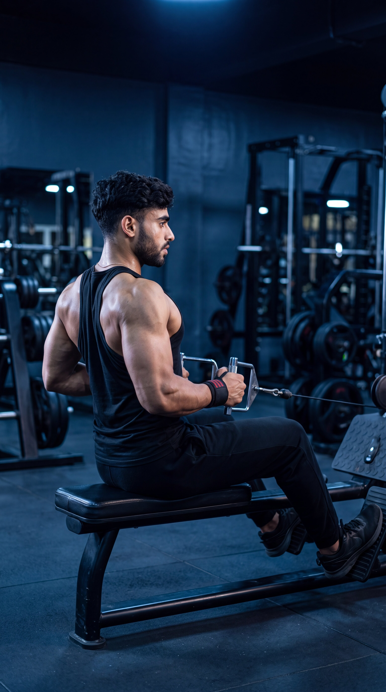

Primary Muscle
Latissimus Dorsi
Build Back Thickness, Strengthen Your Upper Back & Master Horizontal Pulling Technique
The Seated Cable Row is a compound cable exercise that primarily targets the latissimus dorsi and upper-back muscles while also engaging the biceps and surrounding stabilizers. Through a controlled horizontal pulling motion, it helps develop back thickness, pulling strength, muscular control, and balanced upper-body development.

Latissimus Dorsi
Cable Machine
Beginner
Compound
Understand which muscles do most of the work during the Seated Cable Row and which supporting muscles help pull, stabilize, and control the movement throughout each repetition.
Lats
Middle Back
Upper and Middle Back
Front of Upper Arm
Discover how the Seated Cable Row helps develop back thickness, strengthen the lats and upper back, improve horizontal pulling strength, and provide a controlled path for progressive upper-body development.
Trains the latissimus dorsi, rhomboids, and middle trapezius through a horizontal pulling motion, helping develop muscular strength and thickness across the middle and upper back.
Strengthens the muscles responsible for pulling resistance toward the torso, helping develop horizontal pulling ability that supports balanced back training and other rowing movements.
As a compound pulling exercise, the Seated Cable Row recruits the lats, rhomboids, trapezius, rear shoulders, biceps, and other supporting muscles through a coordinated rowing movement.
The cable machine allows resistance to be adjusted according to your strength and experience, making it easier to select an appropriate load while maintaining controlled technique throughout each repetition.
The cable provides consistent resistance throughout the movement, allowing you to focus on driving the elbows backward, controlling the shoulder blades, and maintaining deliberate back engagement.
Resistance can be increased gradually as your strength and technique improve, providing a clear and measurable progression path for continued back development and stronger rowing performance.
Follow these step-by-step instructions to perform the Seated Cable Row with proper setup, controlled technique, stable body positioning, and effective back engagement.
Select an appropriate resistance and attach your chosen handle to the low cable. Sit on the machine with your feet securely positioned on the foot platforms and your knees slightly bent.
Use a manageable resistance that allows you to maintain stable body positioning and complete every repetition without relying on momentum.
Grip the cable attachment firmly with both hands. Keep your wrists in a comfortable, neutral position and extend your arms in front of you while maintaining control of the resistance.
A close neutral-grip handle is a common choice, but different cable attachments can slightly change your grip, elbow path, and muscular emphasis.
Sit tall with your chest naturally lifted, core braced, spine neutral, and arms extended in front of you. Keep your knees slightly bent and maintain a stable torso before beginning the pull.
Avoid excessively rounding your lower back or leaning far backward. Establish a strong, controlled position that you can maintain throughout the repetition.
Drive your elbows backward as you pull the handle toward your lower ribs or upper abdomen. Keep your chest naturally lifted and torso stable while allowing your shoulder blades to move naturally through the rowing motion.
Think about driving your elbows backward rather than simply pulling with your hands. Avoid excessively shrugging your shoulders or using a forceful backward torso swing.
Slowly extend your arms forward and allow the shoulder blades to move naturally as you return to the starting position. Maintain control of the resistance and keep your torso stable throughout the entire return phase.
Do not let the weight stack pull you forward rapidly. Control the return until your arms are extended and your back muscles reach a comfortable stretched position before beginning the next repetition.
Avoid these common technique errors to improve back engagement, maintain better body positioning, and perform the Seated Cable Row more effectively.
Selecting excessive resistance can make it difficult to maintain a stable torso, control the handle, and use a consistent rowing path throughout each repetition.
Choose a manageable resistance that allows you to pull the handle smoothly toward your torso, maintain stable body positioning, and control both the pulling and return phases.
Excessively leaning backward during the pull can turn the movement into a momentum-driven exercise, reduce torso stability, and make it harder to maintain a consistent horizontal rowing pattern.
Keep your torso stable with your chest naturally lifted and core braced. Allow only minimal controlled torso movement rather than rocking backward to move the resistance.
Allowing the lower back to round excessively can reduce torso stability and make it harder to maintain a strong, controlled position throughout the rowing movement.
Keep your spine in a comfortable neutral position, brace your core, and maintain a naturally lifted chest throughout both the pulling and return phases.
Rocking the torso, jerking the handle toward your body, or using momentum can reduce movement control and make it harder to maintain consistent tension on the intended back muscles.
Brace your core, maintain stable body positioning, and perform every repetition with a smooth pull and controlled return without jerking, rocking, or bouncing.
Apply these practical coaching cues to improve your Seated Cable Row technique, increase back engagement, maintain better body positioning, and perform each repetition with greater control and consistency.
Focus on driving your elbows backward as you pull the handle toward your torso rather than simply pulling with your hands and arms.
Think about bringing your elbows behind your body while keeping your chest naturally lifted and your shoulders controlled. This cue can help you focus on the back muscles during the pulling phase.
Keep your core braced and maintain a stable seated position throughout each repetition instead of rocking your torso backward to move the resistance.
Your torso should remain mostly stable while your arms and shoulder blades perform the rowing motion. Avoid excessive backward leaning or using momentum to pull the handle toward your body.
Allow the handle to move forward gradually as your arms extend, maintaining control of the resistance and allowing your back muscles to reach a comfortable stretched position.
Do not let the weight stack pull you rapidly forward. Keep the return smooth and controlled without excessively rounding your lower back or losing your stable seated position.
Increase the resistance only when you can maintain a stable torso, controlled handle path, comfortable range of motion, and smooth repetitions from start to finish.
Heavier weight should not require excessive rocking, shortened repetitions, or jerking the handle toward your body. Progress gradually while keeping every repetition controlled and consistent.
Progress from learning the Seated Cable Row with manageable resistance to stronger, more challenging variations while maintaining stable body positioning, controlled handle path, effective back engagement, and consistent technique.
Start with a resistance that allows you to learn proper machine setup, foot placement, grip position, torso alignment, handle path, and controlled horizontal rowing technique without relying on momentum.
Secure foot positioning, comfortable grip, stable torso, controlled handle path, full comfortable range of motion, and smooth repetitions.
Develop consistent repetitions by driving your elbows backward, pulling the handle toward your torso, and controlling the return until your arms reach a comfortable extended position.
Stable torso position, effective elbow path, controlled pulling phase, smooth return, comfortable stretch, and repetitions without excessive rocking or jerking.
Once you can perform consistent Seated Cable Row repetitions with reliable technique, gradually increase the resistance while preserving your torso position, controlled handle path, range of motion, and smooth movement quality.
Progressive resistance increases, consistent technique, controlled tempo, strong back engagement, full comfortable range of motion, and maintaining form as fatigue develops.
After mastering the standard Seated Cable Row, explore suitable grip widths, alternative attachments, and controlled tempo variations to add variety and new challenges according to your training goals and experience.
Intentional exercise variation, appropriate resistance selection, controlled technique, consistent range of motion, stable positioning, and choosing variations that match your individual goals and comfort.
Find clear answers to common questions about Seated Cable Row technique, muscles worked, grip position, handle path, torso positioning, training volume, and exercise progression.
The Seated Cable Row primarily targets the latissimus dorsi, rhomboids, and middle trapezius. The rear deltoids, biceps brachii, teres major, and other supporting muscles also contribute to the horizontal pulling movement and help maintain controlled upper-body positioning.
A neutral-grip close-row attachment is commonly used for the standard Seated Cable Row because it allows a comfortable hand position and natural elbow path. Different handles and grip widths can also be used depending on your individual comfort, equipment, experience, and training goals.
Pull the handle toward your lower chest or upper abdominal area while driving your elbows backward through a controlled path. The exact finishing position may vary slightly depending on the attachment, grip width, individual anatomy, and your intended rowing technique.
A small amount of controlled torso movement can occur depending on the rowing style, but excessive backward leaning or rocking should not be used to move more weight. For a standard Seated Cable Row, maintain a mostly stable torso and let your back and arms perform the pulling movement.
Yes. The Seated Cable Row is suitable for many beginners because the cable machine allows resistance to be adjusted according to individual strength and experience. Beginners should start with manageable resistance and focus on proper setup, stable body positioning, a controlled handle path, and smooth repetitions.
The appropriate number of sets and repetitions depends on your training experience, goals, recovery, and overall program. For general muscle development, a common starting point is approximately 2–4 working sets of 8–15 controlled repetitions using resistance that allows you to maintain a stable torso, comfortable range of motion, and consistent technique throughout each set.
Explore other back exercises that complement the Seated Cable Row and help you develop horizontal pulling strength, back thickness, upper-back control, and balanced muscular development through different movement patterns and resistance methods.


Continue building your back strength and training knowledge with step-by-step exercise guides covering proper technique, muscles worked, common mistakes, coaching tips, and progression strategies.